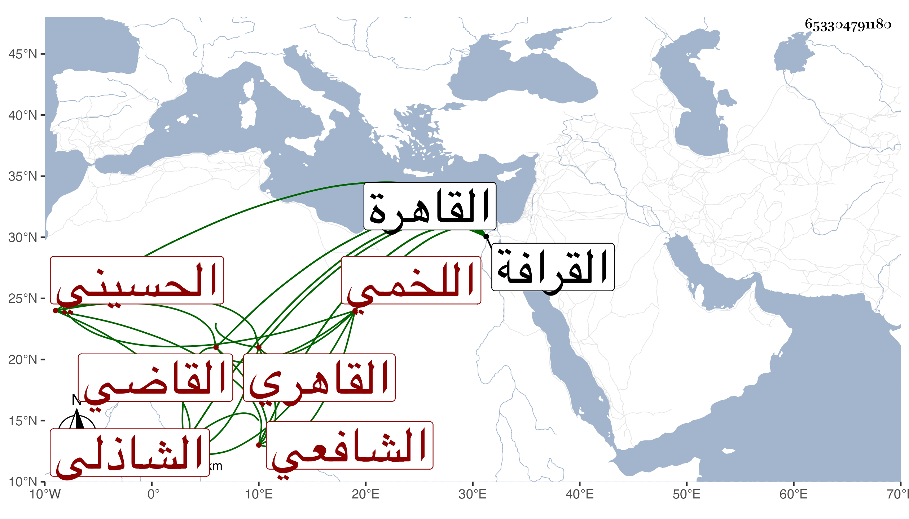

0902Sakhawi.DawLamic.ITO20230111-ara1.EIS1600.653304791180
Biography ID: 653304791180
إبراهيم بن أحمد بن أحمد الميلق بن محمد بن عبد الواحد القاضي برهان الدين ابن الخطيب البدر اللخمي الحسيني نسبة لجدله القاهري الشافعي الشاذلي ويعرف بابن الميلق . ولد في رابع رمضان سنة أربع وثمانين وسبعمائة بالقاهرة ونشأ بها فحفظ القرآن وكان يحكى أنه تلا به لابي عمر وعلى الفخر الضرير وأنه حفظ غيره وسمع دروس ابن الملقن والبلقيني والشمس القليوبي والنور الأدمى في الفقه وغيره ودروس والشمس البوصيري وسمع على التنوخي وغيره مما كله ممكن وقد وقفت على سماعه على الصلاح الزفتاوي والحلاوي والسويداوي وأجاز لي وناب في القضاء وصار ذادربة بالأحكام والشروط وممن يذكر بجودة الخطابة لكونه كان كأبيه خطيبا بجامع الماس وصوته فيها جهوري ولذا عينه الظاهر جقمق وكانت له به خلطة حين مجاورته له أيام أمرته بالقرب من الجامع المذكور للخطابة بجامع طولون بعد عزل أبي اليسر بن النقاش عنها وذلك في جمادى الأولى سنة اثنتين وأربعين مع مشيخة الميعادية أيضا ولخطبة جامع القلعة في أول جمعة في صفر سنة أربع وأربعين حين تغيظه على القاضي الشافعي . وذكر حينئذ لولاية القضاء الأكبر ثم بطل إلا أنه صار ينوب عن السلطان ثم غضب عليه وأبعده وأرسل به إلى القاضي الشافعي مع أبي الخير النحاس لينظر في حكم صدر منه فنهره القاضي وقال له أنك أفتيت في الأحكام بدون إذن مني ولم يزل خاملا حتى مات في سنة سبع وستين ثامن عشرى شعبان وأرخه البقاعي في نحو النصف من رمضان بعد أن أضر وأملق وقاسى ما لعله يكفر به عنه ودفن بتربة التاج بن عطاءالله من القرافة عفا الله عنه وقد بالغ البقاعي في أذاه حيث ترجمه في معجم شيوخه لكونه لم يجرئه على أخصامه جريا على عادته ونسبه إلى الاختلاق وأنه الأذل نسأل الله السلامة . ولما أورد المقريزي خطابته بالسلطان حين غضب على شيخنا سماه برهان الدين إبراهيم ابن شهاب الدين أحمد بن إبراهيم بن الشيخ شهاب الدين أحمد بن مياق والأول أشبه .
